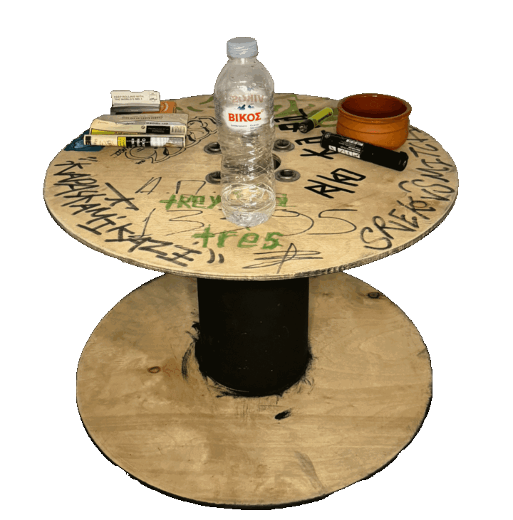

I am a developer and designer interested in bringing elements from the real world into the world wide web.
Recent themes: purposeful friction in design, simulating digital animation through motion in the real world, generative art, organic forms in technology, lightweight systems, impermanent tech, imperfect tech.
tech should slow down on a hot summer day
a site that isn't used should collect dust
a task that's not completed in due time should fade
pixels should wear and tear
expose your method
break routine, do not repeat
a silly activity once is special
a silly activity a hundred times is silly
move things around in your home
(circa 2007 honda jazz)